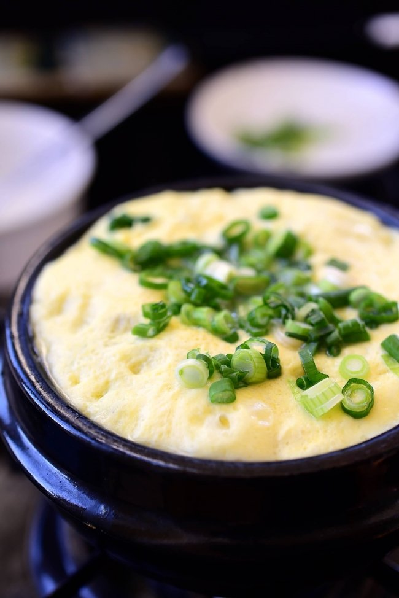

Steamed Egg

Description
A relatively simple dish that is high in protein for all you gym rats. Eggs are a staple in a Korean's diet and this dish perfectly represents that. A dish that can be steamy and fluffy, with a bit of saltiness to it too. If you want, you can add in tiny cut up vegetables to get your veggies in for the day.
Ingredients
- eggs
- salt
- water
optional ingredients
- onions, carrots, or green onions
- any kind of stock broth
Steps
- In a microwave safe bowl crack your eggs in.
- add in a little bit of water to the eggs. If you are using stock broth, use that instead of water.
- Mix the egg and the water/stock till it is well combined.
- If you have veggies you want to add in, cut them into tiny pieces and add into the egg mixture.
- Season to taste the egg mixture with salt.
- Make sure the salt (and veggies) are properly mixed in.
- Mircorwave till the mixture is fully cooked. You can check if the inside is cooked by poking with a stick and seeing if there's any egg mixture that sticks to the stick. If there are, not fully cooked. If the stick comes out clean (perhaps slightly wet), then it is fully cooked.